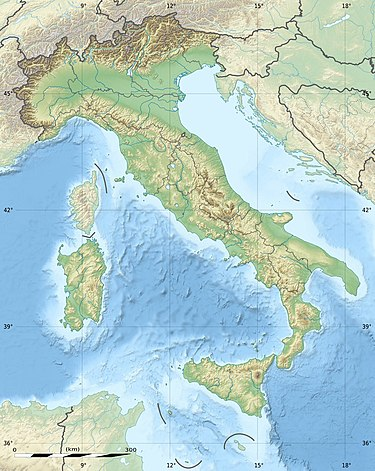
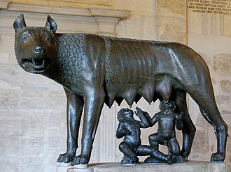

About Rome City
Rome is the capital city of Italy. It is also the capital of the Lazio region, the centre of the Metropolitan City of Rome, and a special comune named Comune di Roma Capitale. With 2,860,009 residents in 1,285 sq km (496.1 sq mi), Rome is the country's most populated comune and the third most populous city in the European Union by population within city limits. The Metropolitan City of Rome, with a population of 4,355,725 residents, is the most populous metropolitan city in Italy. Its metropolitan area is the third-most populous within Italy. Rome is located in the central-western portion of the Italian Peninsula, within Lazio (Latium), along the shores of the Tiber.
Vatican City (the smallest country in the world) is an independent country inside the city boundaries of Rome, the only existing example of a country within a city.Vatican City contains religious and cultural sites such as St. Peter's Basilica, the Sistine Chapel, and the Vatican Museums. They feature some of the world's most famous paintings and sculptures. The unique economy of Vatican City is supported financially by donations from the faithful, by the sale of postage stamps and souvenirs, fees for admission to museums, and sales of publications. Vatican City has no taxes and items are duty-free.
History
While Roman mythology dates the founding of Rome at around 753 BC, the site has been inhabited for much longer, making it a major human settlement for almost three millennia and one of the oldest continuously occupied cities in Europe. The city's early population originated from a mix of Latins, Etruscans, and Sabines.
Traditional stories handed down by the ancient Romans themselves explain the earliest history of their city in terms of legend and myth. The most familiar of these myths, and perhaps the most famous of all Roman myths, is the story of Romulus and Remus, the twins who were suckled by a she-wolf.
Since Rome has abundance history, I just introduce the beginning of Rome City. You will explore more when you visit this beatiful city by yourself.
General information about Rome
| Info | Jan | Feb | Mar | Apr | May | Jun | Jul | Aug | Sep | Oct | Nov | Dec |
|---|---|---|---|---|---|---|---|---|---|---|---|---|
| All are feak data for display. | ||||||||||||
| Mean Temp(F) | 4 | 6 | 9 | 12 | 18 | 25 | 35 | 37 | 35 | 28 | 16 | 8 |
| Mean Rainfall(mL) | 20 | 30 | 35 | 50 | 60 | 65 | 70 | 60 | 50 | 30 | 20 | 15 |
| Visitors(in thousand) | 80 | 120 | 150 | 210 | 260 | 400 | 500 | 600 | 500 | 200 | 150 | 180 |
| Hotel reservation | easy | easy | easy | easy | fair | hard | hard | hard | hard | fair | easy | easy |